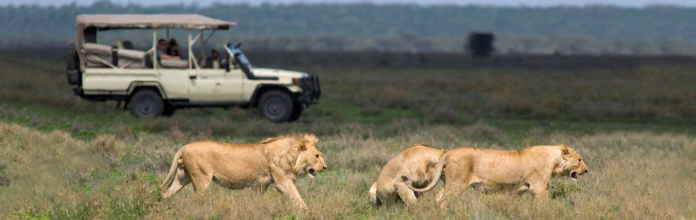

Tanzania’s wilderness defies the imagination, its sweeping plains alive with giant
creatures – and perhaps the closest thing on Earth to a true Garden of Eden. Snowcapped
Kilimanjaro towers above dusty red savanna, flamingo-carpeted lakes abut thick green
forests, and lush grass plains seemingly stretch on forever. First-time visitors are
invariably awed by the scale and color, before being bewitched by the diversity. You’ll
find hidden waterholes, dazzling white sands, teeming volcanic craters, and ice-capped
mountain peaks – all within a few hours of each other. These are landscapes that have
inspired countless wildlife documentaries and Disney movies – evocative spectacles that
remain indelibly raw and rugged.
No great landscape is complete without an inimitable cast of characters. During the
great wildebeest migration, an estimated 1.5 million large mammals march across the
Serengeti, while big cats roam freely through parks and reserves, and spotting hippos
and elephants is an almost daily routine. No country can match the diversity of Tanzania’s
national parks and the mind-boggling concentrations of its wildlife. First-timers are always
wowed, while regulars return year after year because there is always somewhere new to
explore, something new to see. Safaris in Tanzania aren’t about spotting a few animals
they’re a sublime immersion in an ancient and astonishing animal world.
Yet peel yourself away from the captivating wildlife, and the landscapes hold countless
new experiences. Trek up the world’s highest free-standing mountain and stand at 5,895
meters on the roof of Africa. Or be lulled into hibernation on the idyllic beaches of the
mystical Zanzibar Archipelago. And don’t forget one other resident. Tanzanians are famously
relaxed and friendly – unsurprising, given that they also coined the phrase “Hakuna matata”.
For all its vast beauty and monumental scale, Tanzania always offers a very personal experience.
Everybody leaves with different memories, unique snapshots that symbolize their vacation:
a baby elephant being tenderly mothered, mellifluous taarab music wafting through Zanzibar’s
Stone Town, a ferocious growl from a black-maned lion, or the incredible procession of wildlife
wandering past your private veranda. While Tanzania can monopolize superlatives, a trip here is
always an enthralling journey, full of iconic experiences and surprises.
